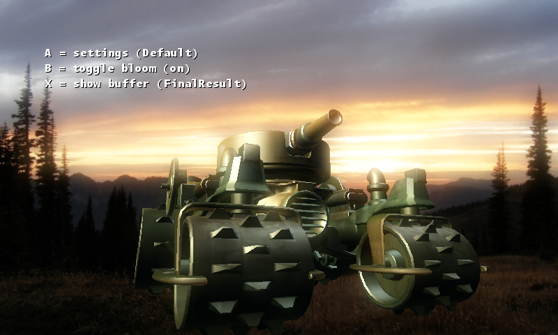

Bloom Postprocess
Ported from Microsoft's XNA 4.0 Bloom Postprocess sample.
Source for this sample on GitHub ↗

Play ▸Opens in a new tab. Use A, B and X to change the bloom effect and inspect its stages.
About this sample
Bloom makes bright parts of a 3D scene appear to glow. The sample extracts those parts into a half-size render target, blurs them horizontally and vertically with Gaussian shaders, then combines the result with the original scene. You can inspect every intermediate buffer and switch between six different bloom settings.
Controls
| Action | Keyboard | Gamepad |
|---|---|---|
| Next settings preset | A | A |
| Toggle bloom | B | B |
| Next intermediate buffer | X | X |
| Exit | Escape | Back |